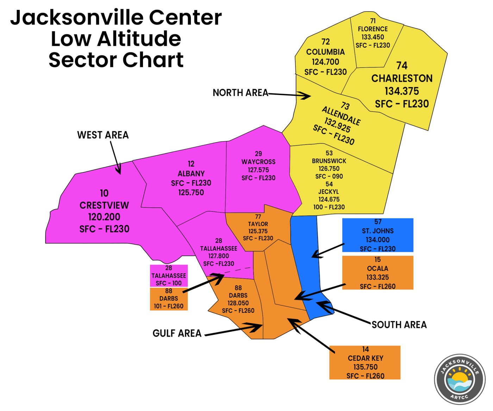
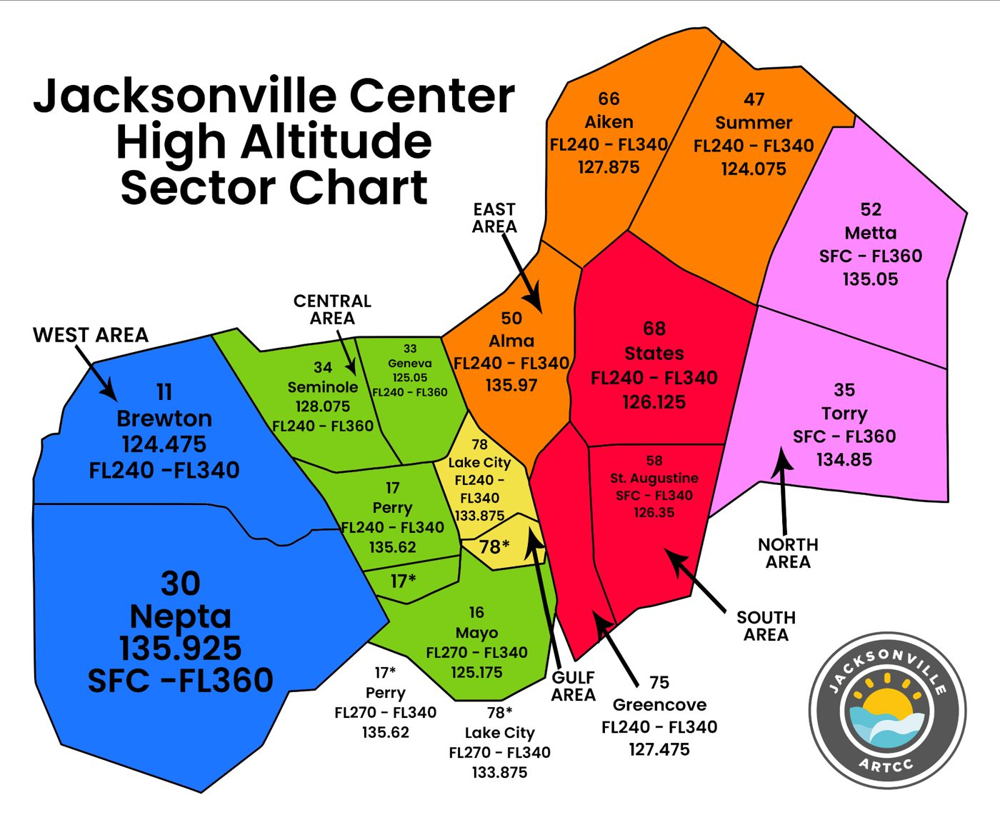
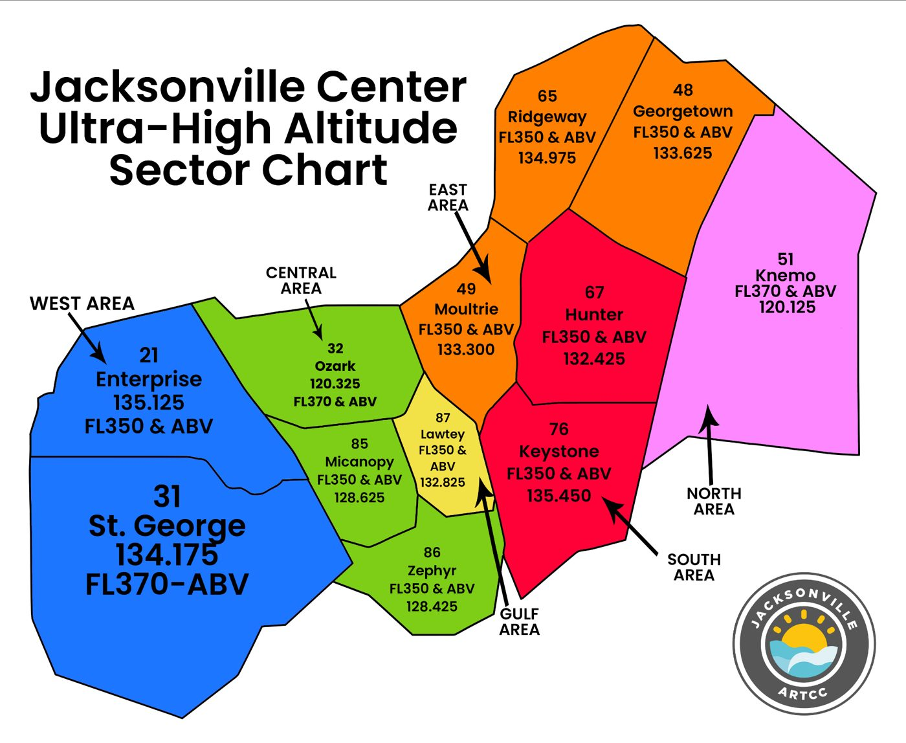

ZJX CROSSINGS
ZJX SOP descent-table restrictions for each aircraft's filed route, from the live VATSIM feed.
Sign in with VATSIM to use this page.
SOP sector charts (Chapter 3)



ZJX SOP descent-table restrictions for each aircraft's filed route, from the live VATSIM feed.
Sign in with VATSIM to use this page.


